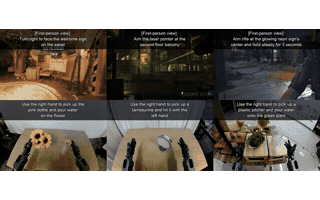
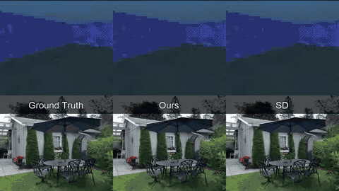
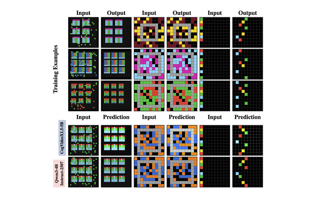
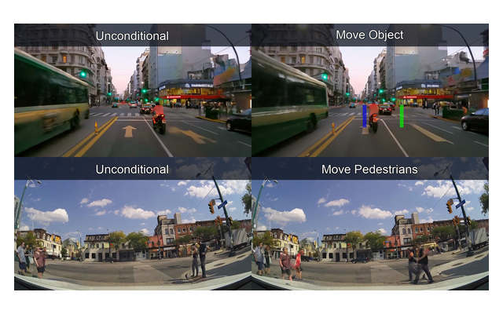
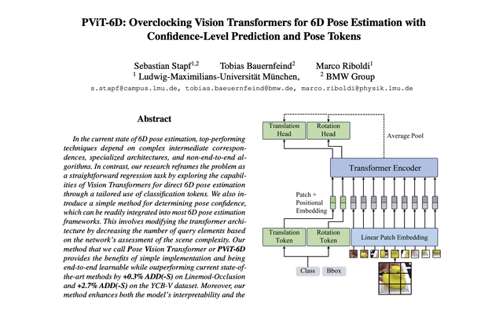

Sebastian Stapf
PhD student in Computer Science | University of Bern
I work on AI research around world models, video generation, and visual intelligence.
Research
Currently a PhD student at the University of Bern. My recent work studies diffusion world models, memory/composition, controllable video, and whether video pretraining gives useful priors for general visual problem solving.
Selected Publications
-

World Model Self-Distillation: Training World Models to Solve General Tasks Sebastian Stapf, Pablo Acuaviva Huertos, Aram Davtyan, Paolo Favaro. arXiv, 2026. -

Composition of Memory Experts for Diffusion World Models Sebastian Stapf, Pablo Acuaviva, Aram Davtyan, Paolo Favaro. ICLR, 2026. -

Rethinking Visual Intelligence: Insights from Video Pretraining Pablo Acuaviva, Aram Davtyan, Mariam Hassan, Sebastian Stapf, Ahmad Rahimi, Alexandre Alahi, Paolo Favaro. ICML, 2026. ARC Prize 2025 (Honorable Mention) -

GEM: A Generalizable Ego-Vision Multimodal World Model Mariam Hassan, Sebastian Stapf, Ahmad Rahimi, et al. CVPR, 2025. -

PViT-6D: Overclocking Vision Transformers for 6D Pose Estimation Sebastian Stapf, Tobias Bauernfeind, Marco Riboldi. arXiv, 2023.
Background
- PhD in Computer Science, University of Bern, 2024-present.
- M.Sc. Physics, LMU Munich, 2024.
- B.Sc. Physics, LMU Munich, 2021.
- Previously worked on 6-DoF pose estimation for in-vehicle augmented reality at BMW.